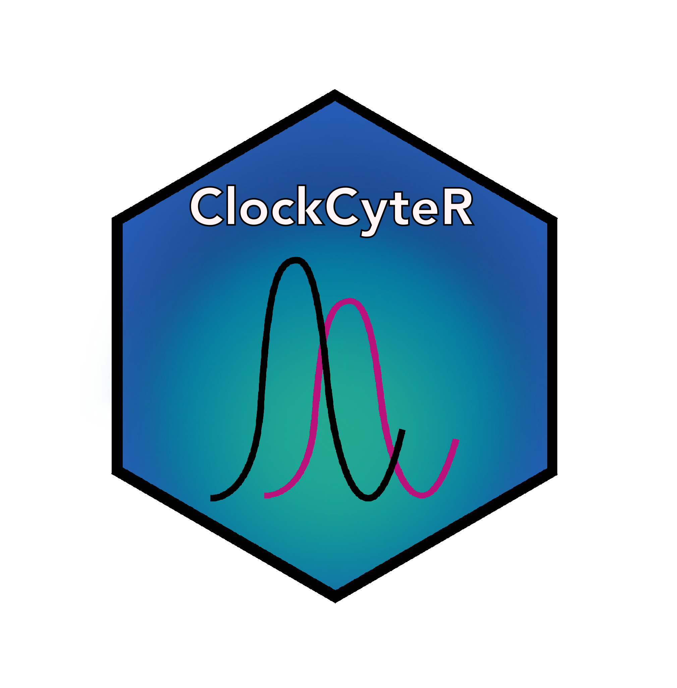
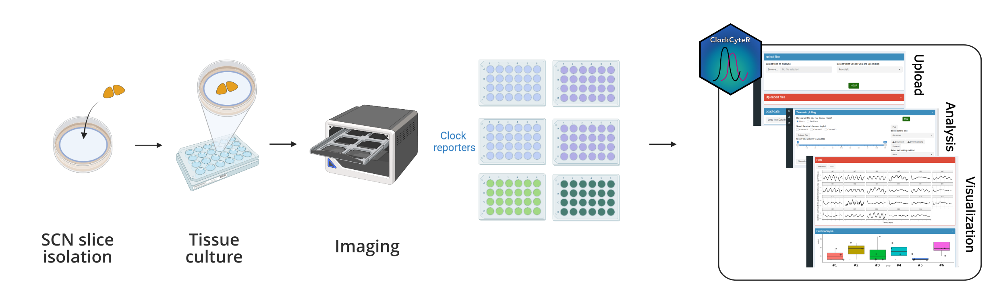
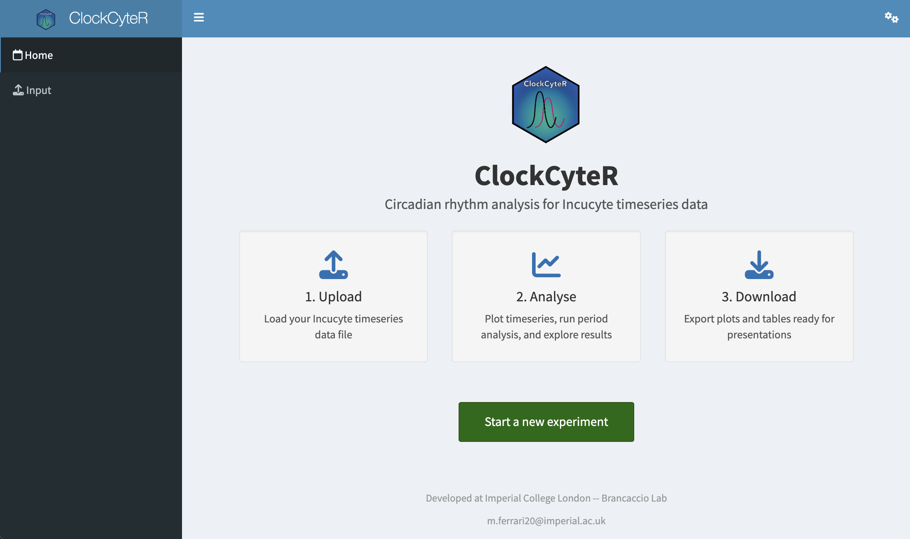
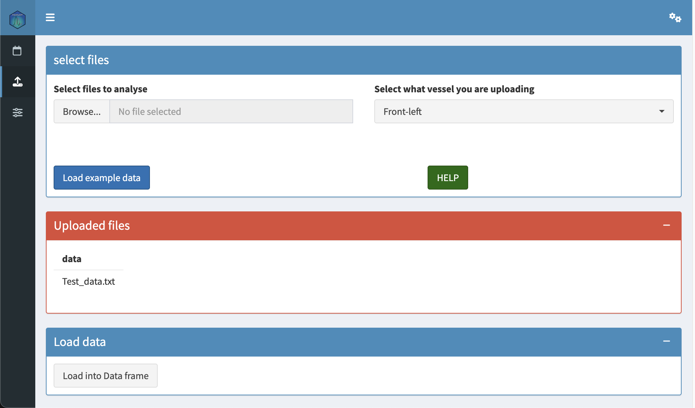
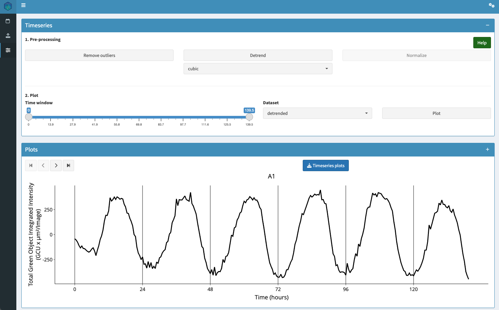
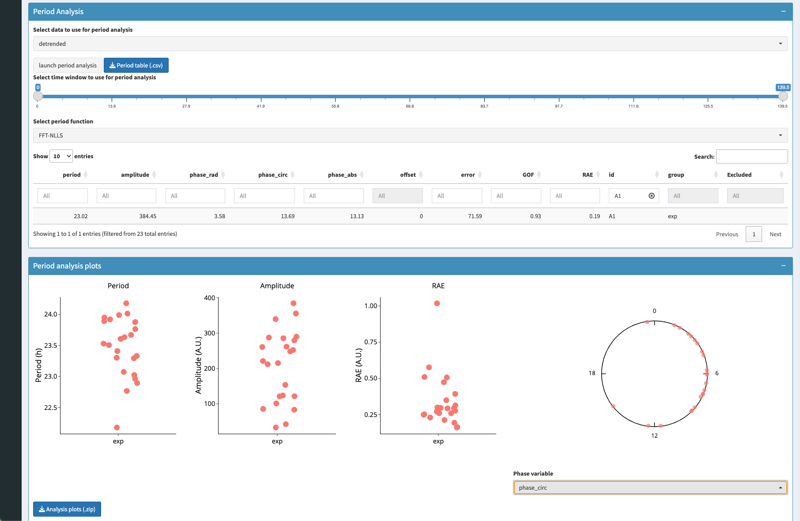

ClockCyteR 
Overview
ClockCyteR is a Shiny application for rapid phenotyping of circadian rhythm time-series data obtained from the Incucyte live-cell imaging platform. Starting from fluorescence intensity traces exported directly from the Incucyte software, ClockCyteR estimates key circadian parameters — period length, amplitude and relative phase — using multiple methods including FFT-NLLS and periodogram-based approaches (chi-squared, Lomb-Scargle, autocorrelation, Fourier and CWT). All results and plots can be exported for downstream analysis.
The app was developed and tested for experiments in which oscillating reporters in SCN slices are imaged continuously for several circadian cycles.

Installation
You can install the development version of ClockCyteR from GitHub:
# install.packages("remotes")
remotes::install_github("cabaJr/clockcyteR")Non-CRAN dependencies
ClockCyteR relies on the rethomics suite for circadian analysis. Install these before the package if they are not already present:
remotes::install_github("rethomics/behavr")
remotes::install_github("rethomics/ggetho")
remotes::install_github("rethomics/zeitgebr")Usage
Launch the app with:
library(clockcyteR)
clockcyteR::run_app()This opens the ClockCyteR landing page in your browser.

Workflow
1. Upload data
Click “Start a new experiment” on the landing page, then select your Incucyte .txt export file and the vessel position it corresponds to (front-left, centre-right, etc.). Press “Load into Data frame” to parse the metadata and intensity traces.

2. Explore and process timeseries
Switch to the Analysis tab to visualise the raw traces. Pre-process the data before plotting by optionally running:
- Remove outliers — LOESS-based detection and removal of aberrant data points
- Detrend — linear or cubic polynomial baseline removal
Then use the time-window slider to select the region of interest and press Plot to inspect the result.

3. Estimate circadian parameters
Select a period-estimation method (FFT-NLLS recommended for most datasets), set the time window for analysis, and press “Launch period analysis”. The app computes period length for each sample and displays a summary table alongside jitter scatterplots of period estimates across groups.

4. Export results
- Download annotated timeseries plots as a
.ziparchive - Download the period / amplitude summary table as
.csv - Download raw cleaned or detrended data as
.csv
Citation
If you use ClockCyteR in your research, please cite:
Ferrari et al. (2026, Advanced Science). A high-throughput live imaging platform to investigate circuit-dependent regulation of circadian rhythms in brain tissue. GitHub: https://github.com/cabaJr/clockcyteR
Code of Conduct
Please note that the ClockCyteR project is released with a Contributor Code of Conduct. By contributing to this project, you agree to abide by its terms.